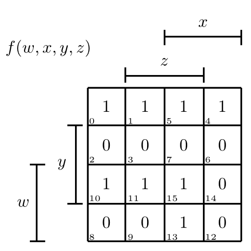

KV-Diagramme sind für die TI-Klausur am KIT bei Herrn Prof. Dr. Asfour sehr wichtig. Im folgenden sind die wichtigsten Eigenschaften, die so explizit leider nicht in der Vorlesung genannt wurden.
Contents
Konstruktion aus Schaltfunktion
Gegeben sei folgende vollständig definierte Schaltfunktion: $f(w,x,y,z) := (w \lor \bar y) (\bar w \lor x \lor y) (\bar w \lor \bar x \lor z)$
Nun kann man eine Funktionstabelle aufstellen:
- Dabei schreibt man sich erst das Gerüst hin, also eine Titelzeile mit den vier Variablen $w,x,y,z$ und $2^4 = 16$ Zeilen für die verschiedenen Funktionswerte. Wir brauchen jeweils eine Spalte für die vier Variablen, eine für den Funktionswert $f(w,x,y,z)$ und am besten noch eine mit der Nummer.
- Nun zählen wir für die vier Variablen binär hoch. Dabei einsprechen die konkatenierten Ziffern der Variablen der Spalte „Nummer“. Ich fine es am einfachsten, dies Spaltenweise zu schreiben. Also 8 Nullen, 8 Einsen für $w$. Dann 4 Nullen, 4 Einsen, 4 Nullen, 4 Einsen für $x$ usw.
- Als letztes schauen wir uns die drei geklammerten Terme von oben an und schauen, wann diese jeweils Null sind. In die entsprechenden Zeilen der Tabelle tragen wir eine Null ein. In alle Übrigen kommt eine Eins.
| Nr | `$w$` | `$x$` | `$y$` | `$z$` | `$f(w,x,y,z)$` |
|---|---|---|---|---|---|
| 0 | 0 | 0 | 0 | 0 | 1 |
| 1 | 0 | 0 | 0 | 1 | 1 |
| 2 | 0 | 0 | 1 | 0 | 0 |
| 3 | 0 | 0 | 1 | 1 | 0 |
| 4 | 0 | 1 | 0 | 0 | 1 |
| 5 | 0 | 1 | 0 | 1 | 1 |
| 6 | 0 | 1 | 1 | 0 | 0 |
| 7 | 0 | 1 | 1 | 1 | 0 |
| 8 | 1 | 0 | 0 | 0 | 0 |
| 9 | 1 | 0 | 0 | 1 | 0 |
| 10 | 1 | 0 | 1 | 0 | 1 |
| 11 | 1 | 0 | 1 | 1 | 1 |
| 12 | 1 | 1 | 0 | 0 | 0 |
| 13 | 1 | 1 | 0 | 1 | 1 |
| 14 | 1 | 1 | 1 | 0 | 0 |
| 15 | 1 | 1 | 1 | 1 | 1 |
Will man diese Tabelle in ein KV-Diagramm übernehmen, muss man nur die Spalte $f(w,x,y,z)$ in der richtigen Reihenfolge in die Tabelle füllen. Das macht man, indem man immer bei einem Eckpunkt beginnt und dann eine Z-Form durchgeht:
{kind=link}
KV-Speed-Zeichnen
Am Ende sieht es so aus: 
Prim- und Kernprimimplikaten
Sei $g(w,x,y,z)$ eine Schaltfunktion. $g$ ist ein Implikant von $f:\Leftrightarrow \forall_{(w,x,y,z) \in \{0,1\}^4}: g(w,x,y,z) \Rightarrow f(w,x,y,z)$.
Ist $g$ ist ein Implikant von $f$, so ist $f$ ein Implikat von $g$.
Das kann man nun sehr schön mit dem KV-Diagramm verknüpfen. Wenn man die beiden Funktionen $f$ und $g$ in das KV-Diagramm einzeichnet, muss $f$ überall dort eine 1 haben, wo $g$ eine 1 hat.
Was hat es nun mit Primimplikanten auf sich? Wenn man diese Kästchen um 1-Blöcke macht, dann müssen sie jeweils insgesamt genau $2^k, k \in \mathbb{N}_0$ Einsen umfassen und dürfen an den Rändern fortgesetz werden (siehe der grüne um 5 und 13). Wenn so ein Block ein Primimplikant ist, darf es keinen größeren Eins-Block geben.
Beispiel:
{kind=link}
KV-Diagramm - Beispiel mit Primimplikanten
Das Rosa-Kästchen ist ein Implikant. Es ist jedoch kein Primimplikant, da das blaue Kästchen größer ist. Bis auf das rosa Kästchen und das braune Kästchen sind alle eingezeichenten Kästchen Primimplikanten sein. Es gibt keine weiteren Primimplikanten in dieser Funktion.
Nun ist ein Primimplikant ein Kernprimimplikant, wenn er eine 1 überdeckt, die von keinem anderen Primimplikanten überdeckt wird. Das gilt für alle Primimplikanten außer den hellgrünen und den braunen Kästchen.
Nochmals für das Beispiel:
Primimplikanten sind:
- (0,1,5,4) // ganz oben, ist auch Kernprimimplikant
- (10,11) // 3. Zeile, ist auch Kernprimimplikant
- (11,15) // 3. Zeile, ist kein Kernprimimplikant
- (15,13) // 3. Spalte, ist kein Kernprimimplikant
- (13,5) // 3. Spalte, ist kein Kernprimimplikant
Primimplikate sind:
- (2,3,7,6) // 2. Zeile, ist auch Kernprimimplikat
- (6,14) // 4. Spalte, ist kein Kernprimimplikat
- (14,12) //4. Spalte, ist kein Kernprimimplikat
- (8,9) // 4. Zeile, ist auch Kernprimimplikat
- (8, 12) // 4. Zeile, ist kein Kernprimimplikat
Hasards
Wie sieht man einen Hasard im KV-Diagramm? Man sucht sich eine Anfangsbelegung und eine Endbelegung. Wenn sich dazwischen $n$ Variablen ändern, gibt es $n!$ Pfade im KV-Diagram. Ist einer dieser Pfade nicht monoton, so ist dieser Übergang Hasardbehaftet.
Nun kann man sich entweder die Funktion selbst im KV-Diagramm anschauen, oder die einzelnen Variablen mit dem Todzeitmodell aufsplitten. Untersucht man ersteres, kann man Funktionshasards finden, bei letzterem Strukturhasards.
Nun kann man jeden Hasard noch aufteilen, je nach dem was der Wert der Funktion mit der Anfangsbelegung A bzw. der Wert der Funktion bei der Endbelegung B ist:
- $f(A) = 0 \land f(B) = 0 \Rightarrow$ Statischer 0-Hasard
- $f(A) = 0 \land f(B) = 1 \Rightarrow$ Dynamischer 01-Hasard
- $f(A) = 1 \land f(B) = 0 \Rightarrow$ Dynamischer 10-Hasard
- $f(A) = 1 \land f(B) = 1 \Rightarrow$ Statischer 1-Hasard
Beispiel
Hier ist ein Beispiel für einen dynamischen 1-0-Hasard:
{kind=link}
Beispiel eines dynamischen 1-0-Hasards
Fallstricke
Bei dem Suchen nach Eins- oder Nullblöcken darf man an den Spiegelachsen springen:
{kind=link}
KV Diagramm: Fallstrick 1
Quelle: Klausur vom SS 2010 (KIT)
{kind=link}
KV Diagramm: Fallstrick 2
Quelle: Klausur vom SS 2010 (KIT)